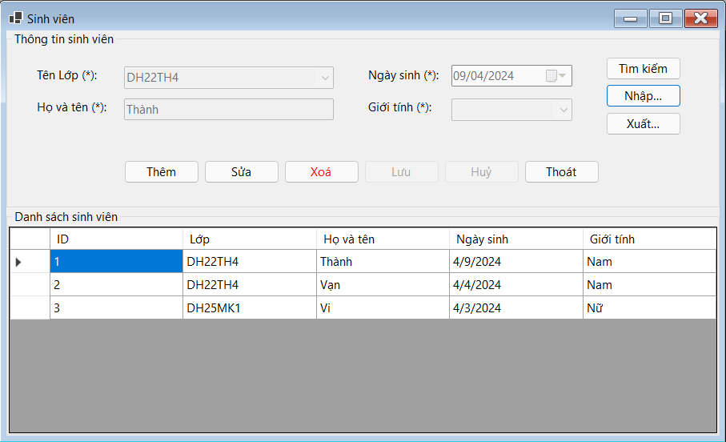

Hướng dẫn sử dụng màn hình Sinh viên.
Cách dùng: Chọn Dữ liệu: Nhấp chuột vào hàng trong DataGridView để chọn sinh viên cần sửa hoặc xóa, sửa Dữ liệu: Chọn hàng, nhấn Sửa, chỉnh sửa thông tin và nhấn Lưu, xóa Dữ liệu: Chọn hàng, nhấn Xóa và xác nhận, cập nhật DataGridView: Sau mỗi thao tác, nạp lại dữ liệu để cập nhật thông tin mới nhất.
Bước 1: Nhấn nút "Thêm".
Bước 2: Các trường nhập liệu sẽ được kích hoạt (có thể chỉnh sửa).
Bước 3: Chọn lớp từ combo box cboLop, chọn giới tính từ combo box cboGioiTinh.Nhập tên sinh viên vào txtTenSinhVien.Chọn ngày sinh từ dtpNgaySinh.
Bước 4: Nhấn nút "Lưu" để lưu thông tin sinh viên mới.
Bước 1: Chọn một sinh viên từ danh sách (trong dataGridView).
Bước 2: Nhấn nút "Sửa".
Bước 3: Các trường nhập liệu sẽ được kích hoạt (có thể chỉnh sửa).
Bước 4: Chỉnh sửa thông tin sinh viên cần thay đổi.
Bước 5: Nhấn nút "Lưu" để lưu các thay đổi.
Bước 1: Chọn một sinh viên từ danh sách (trong dataGridView).
Bước 2: Nhấn nút "Xóa".
Bước 3: Một hộp thoại xác nhận sẽ xuất hiện, nhấn "Yes" để xác nhận xóa.
Bước 4: Sinh viên sẽ bị xóa khỏi cơ sở dữ liệu và danh sách sẽ được cập nhật lại.
Bước 1: Sau khi thêm hoặc chỉnh sửa thông tin sinh viên, nhấn nút "Lưu".
Bước 2: Nếu thiếu thông tin yêu cầu, thông báo lỗi sẽ hiển thị.
Bước 3: Nếu tất cả thông tin hợp lệ, dữ liệu sẽ được lưu vào cơ sở dữ liệu và giao diện sẽ cập nhật lại danh sách sinh viên.
Bước 1: Nhấn nút "Nhập"
Bước 2: Chọn tập tin Excel cần nhập.
Bước 3: Nhấn "Open" để mở tập tin.
Bước 4: Dữ liệu từ tập tin Excel sẽ được đọc và thêm vào cơ sở dữ liệu.
Bước 5: Một thông báo sẽ xuất hiện khi việc nhập dữ liệu thành công.
Bước 1: Nhấn nút "Xuất".
Bước 2: Chọn nơi lưu tập tin và đặt tên tập tin.
Bước 3: Nhấn "Save" để lưu tập tin.
Bước 4: Một thông báo sẽ xuất hiện khi việc xuất dữ liệu thành công